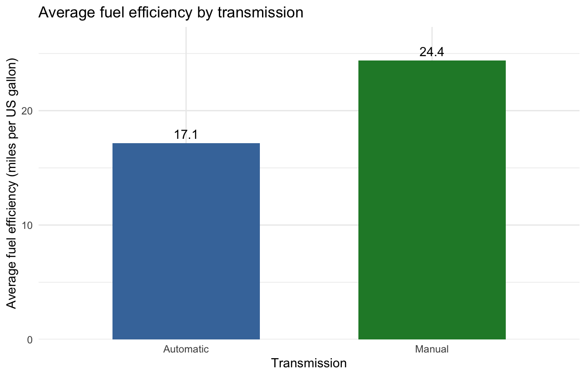

In this post, I use R and Python together to compare fuel efficiency between automatic and manual cars.
I prepare the data in R, calculate group summaries in Python, and bring the results back into R to create a table and plot. The reticulate package allows the two languages to share objects without saving intermediate CSV files.
The data was extracted from the 1974 Motor Trend magazine and contains 32 cars from the 1973–74 model years. The R documentation cites Henderson and Velleman (1981).
The dataset comes with R, so no separate download is needed.
python: /Users/patelru/ubc_mds/521/datasci201195.github.io/.venv/bin/python
libpython: /Users/patelru/.local/share/uv/python/cpython-3.14.7-macos-aarch64-none/lib/libpython3.14.dylib
pythonhome: /Users/patelru/ubc_mds/521/datasci201195.github.io/.venv:/Users/patelru/ubc_mds/521/datasci201195.github.io/.venv
virtualenv: /Users/patelru/ubc_mds/521/datasci201195.github.io/.venv/bin/activate_this.py
version: 3.14.7 (main, Aug 14 2026, 15:24:10) [Clang 22.1.3 ]
numpy: /Users/patelru/ubc_mds/521/datasci201195.github.io/.venv/lib/python3.14/site-packages/numpy
numpy_version: 2.5.3
NOTE: Python version was forced by use_python() function
This post is inside posts/r-and-python, so ../../.venv points to the Python environment at the repository root. This relative path also works when the repository is cloned into a different location.
The configuration output shows which Python interpreter is being used.
Prepare the data in R
I select fuel efficiency, weight, and transmission type. The original transmission variable uses 0 for automatic and 1 for manual, so I create readable labels.
There are no missing values in these selected columns. Fuel efficiency is measured in miles per US gallon, and weight is measured in thousands of pounds.
Pass the R data to Python
In a Python chunk, r.cars_bonus accesses the object created in R. Reticulate converts the R data frame into a pandas DataFrame.
import pandas as pdcars_python = r.cars_bonus.copy()print(type(cars_python))
The manual group has an average fuel efficiency of about 24.4 MPG, compared with 17.1 MPG for the automatic group.
However, the manual cars are also lighter on average. Their average weight is about 2.41 thousand pounds, compared with 3.77 thousand pounds for the automatic cars.
Bring the Python results back to R
In an R chunk, py$transmission_summary accesses the summary created in Python. I store it as an R object and display it as a table.
The numbers in this table were calculated in Python and then passed back to R.
Plot the results in R
ggplot( summary_r,aes(x = transmission, y = average_mpg, fill = transmission)) +geom_col(width =0.6) +geom_text(aes(label =round(average_mpg, 1)),vjust =-0.5 ) +scale_fill_manual(values =c("Automatic"="#4477AA", "Manual"="#228833") ) +scale_y_continuous(expand =expansion(mult =c(0, 0.12)) ) +labs(title ="Average fuel efficiency by transmission",x ="Transmission",y ="Average fuel efficiency (miles per US gallon)" ) +guides(fill ="none") +theme_minimal()

Figure 1: Average fuel efficiency by transmission type. The averages were calculated in Python and plotted in R.
Conclusion
Manual cars have higher average MPG in this dataset, but they are also lighter on average. This comparison does not show that changing the transmission alone would improve fuel efficiency.
The dataset contains only 32 older cars, so these results should not be assumed to describe modern vehicles.
This post demonstrates a shared workflow: R prepares the data, Python calculates the summaries, and R displays the results. The objects are passed between the languages using reticulate.